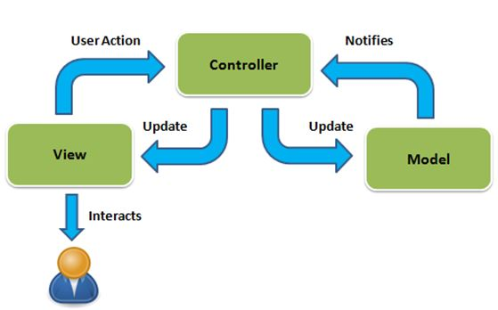

## ASP.NET Core MVC </br> #### Key topics for tonight <div style="text-align: left;"> - What is a web framework? </br> - ASP.NET Core MVC </br> - The MVC design pattern </br> </div> --- ## What is a web framework? #### Definition A web framework establishes patterns and offers tools for common use cases when building websites. --- ## Web Framework (cont) #### Perks - These frameworks often offer great examples and starter code for you to learn by example. - Gives you a common starting starting point with the larger devlopment community when building your website. - Removes the need to construct your own boiler plate code and allows you to instead get started with creating what is important for you. - Allows you to get a website up and running quickly. --- ## Web Framework (cont) #### Additional facts - Are often constructed in ways the support proven <span style="color: cadetblue">software design patterns</span>. - Web Frameworks often address a range of commonly needed website scenarios such as: - Security / user authorization - Site Navigation - Web Site Deployment - Enabling UI Componentization and reuse --- ## ASP.NET Core MVC One of the offered web frameworks that is built around modern C#, utilizing the MVC - (Model, View, Controller) design pattern. --- ## ASP.NET Core MVC (cont) #### Demo / Links <a href="https://docs.microsoft.com/en-us/aspnet/core/tutorials/first-mvc-app/start-mvc?view=aspnetcore-5.0&tabs=visual-studio">Getting started with ASP.NET Core MVC</a> <a href="https://docs.microsoft.com/en-us/aspnet/core/tutorials/razor-pages/?view=aspnetcore-5.0">Create a Razor Pages web app with ASP.NET Core</a> <a href="https://docs.microsoft.com/en-us/aspnet/core/tutorials/choose-web-ui?view=aspnetcore-5.0">Choose an ASP.NET Core web UI</a> --- ## The MVC Design Pattern  --- ## The MVC Design Pattern (cont) #### Model - Primarily responsible for representing the data structures needed by the application. - Oftentimes includes the needed logic pertaining to that data, however this is sometimes moved to a different application layer called the <span style="color: cadetblue">service layer</span> - <a href="https://docs.microsoft.com/en-us/aspnet/mvc/overview/older-versions-1/models-data/validating-with-a-service-layer-cs#creating-a-service-layer">Microsoft Docs Example</a> --- ## The MVC Design Pattern (cont) #### View - The visual portion of the application that presents the information from the <span style="color: cadetblue">Models</span> to the user. - Within a web framework like ASP.NET Core MVC, the views are typically captured within our <span style="color: cadetblue">cshtml</span> files. --- ## The MVC Design Pattern (cont) #### Controller - Handles requests from the user, performs actions to update the Model, and directs which views to render. - Serves as the entrypoint to bridge the gap between your <span style="color: cadetblue">Front-end</span> and <span style="color: cadetblue">Back-end</span> logic. --- ## MVC - Concept Checks! For the following concepts, identify if it aligns most closely with the `Model`, `View`, or `Controller`. </br> - `cshtml`, `html`, and `css` files. - A C# class which defines the data structure of a user account on a website. - Presentation to the user. - Handling requests and directing the web application to render particular web pages. --- ## Exercises [Link](https://education.launchcode.org/csharp-web-development/chapters/interfaces-and-polymorphism/exercises.html) --- ## Questions --- # Studio [Link](https://education.launchcode.org/csharp-web-development/chapters/interfaces-and-polymorphism/studio.html)